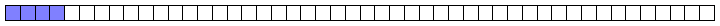
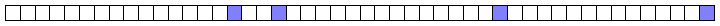

NVMe "Disk" Bandwidth and Latency for Batched Block Requests
Posted on 2019-03-22 16:00 by Timo Bingmann at Permlink with 0 Comments. Tags: c++ stxxl thrill
Last week I had the pleasure of being invited to the Dagstuhl seminar 19111 on Theoretical Models of Storage Systems. I gave a talk on the history of STXXL and Thrill, but also wanted to include some current developments. Most interesting I found is the gap closing between RAM and disk bandwidth due to the (relatively) new Non-Volatile Memory Express (NVMe) storage devices.
Since I am involved in many projects using external memory, I decided to perform a simple set of fundamental experiments to compare rotational disks and newer solid-state devices (SSDs). The results were interesting enough to write this blog article about.
Among the tools of STXXL/FOXXLL there are two benchmarks which perform two distinct access patterns: Scan (benchmark_disks) and Random (benchmark_disks_random).
- In Scan a batch of k sequential blocks of size B are read or written in order.
 - In Random a batch of k randomly selected blocks of size B from a span of size N are read or written.

The Scan experiment is probably the fastest access method as it reads or writes the disk (actually: storage device) sequentially. The Random experiment is good to determine the access latency of the disk as it first has to seek to the block and then transfer the data. Notice that the Random experiment does batched block accesses like one would perform in a query/answering system where the next set of random blocks depends on calculations performed with the preceding blocks (like in a B-Tree). This is a different experiment than done by most "throughput" measurement tools which issue a continuous stream of random block accesses.
In our computing center I selected three different types of storage devices:
- HDD-2012: a rotational Western Digital WD1000DHTZ Velociraptor 10000rpm 1 TB 3.5" hard disk attached via SATA.
Benchmarks from UserBenchmark.com rate its sequential bandwidth as 121–217 MiB/s read and 112–192 MiB/s write. - SSD-2013: a NAND-Flash Samsung SSD 840 EVO 1 TB (MZ-7TE1T0BW) 2.5" attached via SATA. It has 2D-NAND TLC, 19nm chips by Samsung.
Benchmarks from UserBenchmark.com show its sequential bandwidth ranging from 348–508 MiB/s read and 152–488 MiB/s write. - NVMe-2016: a NVMe Samsung SSD 960 Pro NVMe 512 GB (MZ-V6P512BW) M.2 attached via PCIe x4. It has 3D-NAND MLC, chips by Samsung, 48 Layer (V-NAND v3).
Benchmarks from UserBenchmark.com show its sequential bandwidth ranging from 1124–2639 MiB/s read and 648–1943 MiB/s write.
There are two main questions behind the benchmarks:
- what is a good block size B to achieve high throughput, and
- how many I/O requests k of blocks B have to be batched to fully utilize the storage devices.
These two parameters are vital when designing and implementing external memory algorithms. The experiment was designed to see how these parameters change with the underlying storage architecture. The batched I/O requests are submitted by FOXXLL/STXXL to the Linux kernel using the asynchronous I/O aio interface. While preparing these experiments, I optimized FOXXLL's I/O queues to submit batches to the linux kernel instead of individual requests (see commit foxxll@c400389). This patch improved throughput on the fast NVMe by about 6% for random I/O.
All experiments were run with transfer block size B ranging from 1 KiB to 64 MiB. According to their specifications sheets, all tested devices internally have 4 KiB sectors. The batch size was varied from 1, where only a single request in issued to the device at once, up to 128 for the Scan experiment and up to 8 Mi for Random.
The full result set is available as a gnuplot PDF  , the benchmark programs are part of the STXXL/FOXXLL library, and the raw result data
, the benchmark programs are part of the STXXL/FOXXLL library, and the raw result data  (278 KiB) can be downloaded as a zip file.
(278 KiB) can be downloaded as a zip file.
Scan Bandwidth Results
The following three plots show the results for the Scan experiment on the three devices (click on the images for larger versions):


The block size is plotted on the x-axis and the y-axis presents the achieved bandwidth for the access pattern. The colored series visible as parallel lines are exponentially increasing batch size k. Solid lines are read operations and dashed lines are write operations.
The results clearly show that achieving maximum bandwidth on the devices requires a certain combination of block size B and batch size k.
For HDD-2012 it is sufficient use 32 KiB blocks with k=1 (solid red line) or batch size k=64 with 4 KiB blocks (solid black line) to achieve the maximum bandwidth of about 190 MiB/s. Due to caching in the drive itself, the initial bandwidth series actually overshoot the maximum drive bandwidth. Write bandwidth is approximately the same as read bandwidth for this disk; except for blocks smaller than 4 KiB, which are smaller than the drive's internal sectors.
SSD-2013 is a considerably faster storage device and reaches the ~500 MiB/s and ~480 MiB/s reported by other user benchmarks on UserBenchmark.com. However, the B and k values to achieve maximum bandwidth have changed considerably: when performing single operations (k=1) the block size B has to be increased to 32 MiB to achieve the 500 MiB/s throughput. The block size can be reduced by batching operations: the biggest batches in our experiment k=128 achieve maximum throughput for B=64 KiB, which is only 8 MiB per batch. For smaller batch sizes and smaller block sizes the performance degrades gradually. For example, single operations with 64 KiB or 128 KiB blocks only reach ~45% of maximum bandwidth. Write operations again behave very similar to read operation, though the maximum bandwidth peaks at ~480 MiB/s.
NVMe-2016 shows another boost in absolute bandwidth and a new disparity in read and write performance. For single operations (k=1) the block size has to be increased to 64 MiB to nearly reach the maximum throughput measured in our experiment. The maximum read bandwidth of ~3400 MiB/s was higher than the those from UserBenchmark.com (only 2639 MiB/s) while the write bandwidth of ~1900 MiB/s is as expected. This may be due to Linux's better support for the NVMe I/O queues than the Windows kernel. For k=128 batch sizes the block size required to read full bandwidth was B=512 KiB or B=1 MiB (which are 64 MiB or 128 MiB batches). The maximum write bandwidth is much lower, only about 55% of read bandwidth, which is an interesting disparity. The NVMe plot shows how difficult it is to fully utilize the available sequential read bandwidth of the current NVMe generation.
The following plot shows the vast increase in bandwidth of NVMe and SSD technology over rotational disks: NVMe devices are more than an order of magnitude faster than rotational disks.

Random Disk Access Latency and Bandwidth Results
The next series of plots shows the results of the Random experiment. The following two first focus on the latency of each batch request. The block size is again plotted on the x-axis and the y-axis presents the latency per block for the Random access pattern.


The plot on the left shows that a single read operation on HDD-2012 has a latency of 5.6 ms until around 64 KiB after which the latency starts rising linearly with the block size. Write latency on HDD-2012 is only 1.5 ms due to write caching inside the disk.
On SDD-2013 the read latency is only around 170 µs for 4 KiB blocks, but it rises quickly to 912 µs for 128 KiB blocks and then rises linearly with the number of sectors the SSD has to access. Write latency is again lower due to caching and starts with 85 µs for 4 KiB blocks and 835 µs for 128 KiB blocks.
The latency on NVMe-2016 is again lower than on the older SSD: 86 µs for 4 KiB blocks and 300 µs for 128 KiB blocks. The linear rise starts earlier than on SSD-2013, which means that the overhead of small block reads has decreased. Write latency on the NVMe device is much lower: only 33 µs for 4 KiB blocks and 198 µs for 128 KiB blocks.
The plot on the right shows the block access latency when performing batched block accesses. Batching allows the storage devices to optimize the access of many random requests by reordering them or executing them in parallel. However, submitting batches of 1024 random requests at once does not yield a 1024-fold speedup. The speedup on the NVMe is only about 25.
To better understand how well batching speeds up random accesses, consider the following two plots.


In the left plot, the block size is again plotted on the x-axis and the y-axis presents the speedup of submitting 1024 random requests over just a single request in a batch. This plot is the ratio between the previous two latency plots above.
Depending on the block size, the storage devices can process many blocks in parallel. For 4 KiB blocks, the NVMe-2016 can process about 25, the SSD-2013 about 11, and the HDD-2012 about 3 I/O requests simultaneously. This number decreases rapidly for the NVMe-2016 and SSD-2013 as the block size is increased, the HDD-2012 can perform 3 I/O simultaneously up to 32 KiB blocks.
The right plot answers the question of how many I/O requests one has to submit to achieve the maximum batch parallelism for 4 KiB blocks. In this plot the x-axis is the batch size k and the y-axis shows the achieved speedup. From that plot one can see that to actually gain the maximum ~27 fold parallelism with the NVMe-2016, one has to submit about 4096 parallel requests. For the SSD-2013 the maximum speedup is ~11 and this requires only 256 parallel requests. And for HDD-2012 the maximum speedup is ~3 and requires 512 requests.
Both plots show that batching write requests also improves performance, but as not much as for read.
The following set of six plots shows the random access bandwidth (instead of latency). As before, the block size is plotted on the x-axis and the y-axis presents the bandwidth in MiB/s.


One can see a very different shape in the first plot column for HDD-2012 compared to the other two columns: increasing the batch size has a much smaller effect on the throughput than increasing the block size. This is of course due to the rotational disk technology. For random writing on HDD-2012 batching has practically no effect on the throughput. The sequential bandwidth (about 217 and 190 MiB/s, respectively) is not reached for read and barely for write with very large block sizes.
For SSD-2013, batching random read operations is very important: this plot has the lowest relative performance for non-batched operations over large batched ones. However, given enough batched operations, for SSD-2013 the throughput of random reads and writes is equal to the throughput for sequential access in the first experiment. Here batching also accelerates writing. If required to use a small block size, the best trade-off on SSD-2013 is to use 64 KiB blocks were read is nearing its peak performance and write is already maximized.
As one would expect, for NVMe-2016, batching random reads is also very important. However, it only reads about 1800 MiB/s random throughput for B<32 MiB compared to the ~3400 MiB/s for sequential access. The same effect appears for random write operations, which peak at about 1300 MiB/s compared to ~1900 MiB/s for sequential write. Batching is much more important for read operations, than write operations on NVMe-2016, so much so that batched random write of 128 KiB blocks is faster than batched random reading of the same block size. Nevertheless with random operations on NVMe-2016 one cannot achieve the same performance as with sequential ones, contrarily to SSD-2013. By increasing the block size to 32 or 64 MiB the throughput strangely starts to increase again for large read batches.
Conclusion
The following two summary plots give an overview of both Read and Random access results, for batch with k=1 on the left and k=1024 on the right.


While the two plots highlight the massive increase of NVMe bandwidth over previous storage technology, they also show the shortcomings of NVMe devices: the performance disparity between read and write operations, and also between sequential and random access throughput. Both traits are important when designing algorithms using external memory.
In the context of NVMe one must consider that the scanning bandwidth of RAM on machines like this (refer to my pmbw project for details), is about 20 GiB/s for a single thread and 100 GiB/s for all cores in parallel. Thus the ratio between RAM and external storage bandwidth has shrunk by an order of magnitude due to the new technology. This is exciting because external memory algorithms now have to be improved again to cope with the fast storage devices.